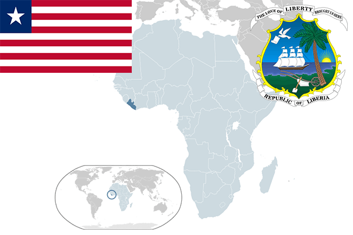

To`liq nomi: Liberiya Respublikasi
Region: G`arbiy Afrika
Qonunchilik shakli: Respublika
Mustaqillik kuni: 26-iyul 1847-yil asos solingan
Poytaxt: Monroviya
Maydoni: 111 369 km² (dunyoda 102 -o`rinda )
Chegaradosh davlatlari: Serra-Leon, Gvineya
Aholisi: 4,503,000 (dunyoda 125 - o`rinda, 2015 -yil roʻyxat)
Aholi zichligi:40,43/km²
Aholining o`rtacha yoshi: 40,4 yil (41,9 ayollar,38,9 erkaklar)
Rasmiy tili: Ingliz tili
Dini: 85% xristian, 12% musulmon va boshqa dinlar
Pul birligi: Liberiya dollari
Telefon prefiksi: +231
Internet domen: .lr
Xalqaro tashkilotlarga a`zoligi: BMT (1945 – yildan)
Dengiz va okeanlarga chiqishi: Atlantika Okeani
YIM: Butun: $ 4.123 mlrd, Jon boshiga $ 915 (2017 - yil roʻyxati)
Yirik shaharlari: Monroviya